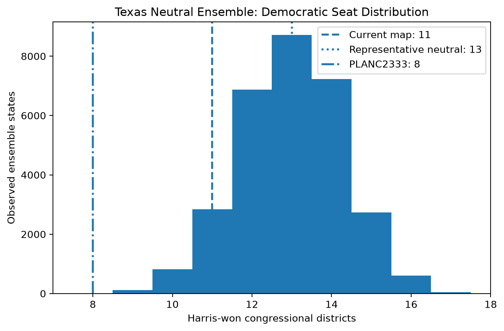
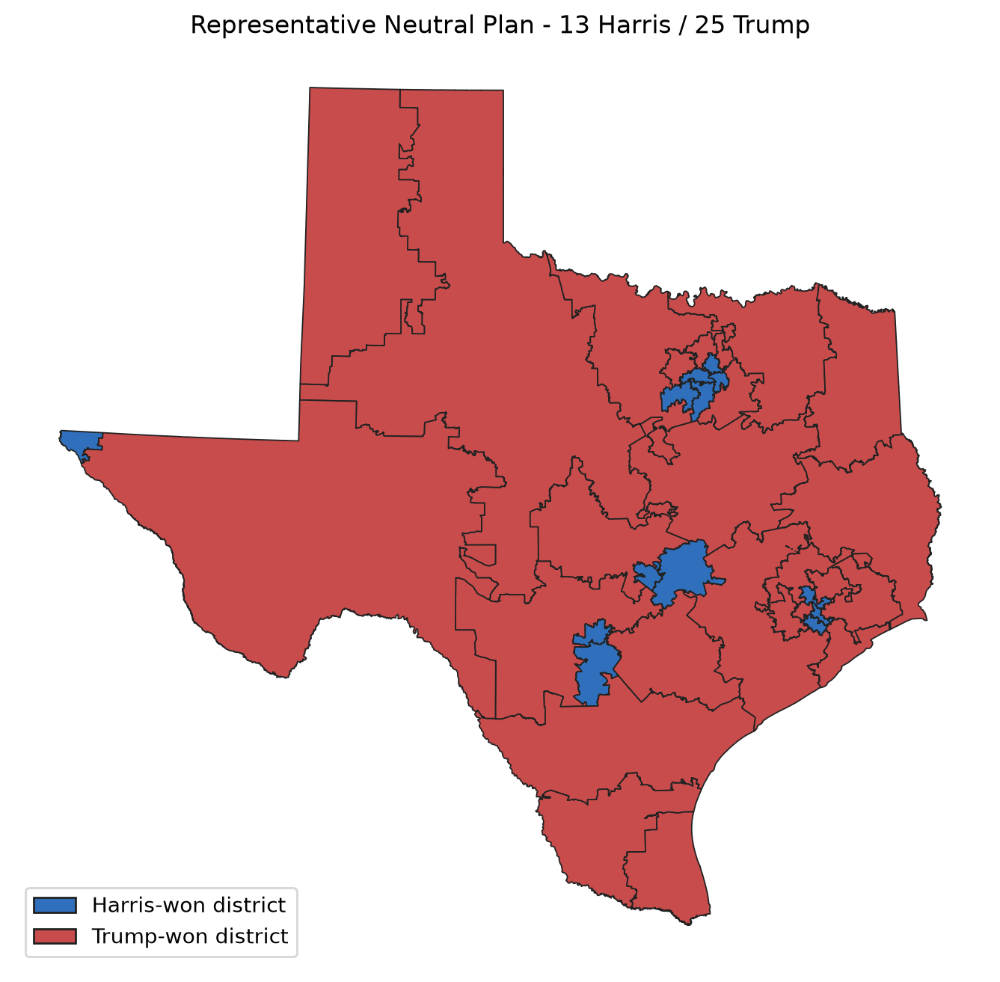

Results
I reported 30,000 post-burn-in ReCom states. Every generated plan contains 38 contiguous congressional districts and stays within +/-0.1% of ideal district population. The 2024 Harris-Trump presidential vote is used as the partisan proxy.
I reported 8 Democratic seats. No retained state went below 9 Harris-won districts. PLANC2333 has 8 and was below this earlier reported range.
I scored the older 2021 map at 11 Democratic-majority districts and recorded its descriptive lower tail as 12.607% in the earlier ensemble.


Data and method
I used the Harris vs. Trump results to measure how each precinct leans.
The ensemble requires contiguous districts and population balance within +/-0.1%.
The final pipeline uses Census-block population rather than precinct-centroid population assignment. Block records are aggregated to the validated 2024 precinct geography. The final precinct dataset contains 9,712 units, including 322 zero-population units, and preserves the exact statewide population total.
I reported 30,000 post-burn-in states. Effective sample sizes are approximately 98 for seat count, 92 for efficiency gap, and 118 for mean-median.
Limitations
I no longer have this earlier chain file, and I keep its reported values separate from the source rebuild. The states are autocorrelated, while descriptive tails, including zero counts, leave event probabilities unresolved. I used modeled presidential votes and population/contiguity constraints, with uniform sampling, compactness, county preservation, and full legal compliance outside the implemented model.
Data sources
| Dataset | Source | What it provides |
|---|---|---|
| 2024 General Election VTD Results | RDH / VEST | Precinct-level vote totals |
| 2020 PL 94-171 VTD data | Census Bureau via RDH | Population by VTD |
| 2025 Congressional Plan (PLANC2333) | Texas Legislative Council | Enacted 2025 boundaries |
| 2012-2021 Congressional Districts | Texas Legislative Council | Previous boundaries |